PBL 商業分析
經濟學
跟工業系跨系合作：我們負責分析，他們負責做竹槍。
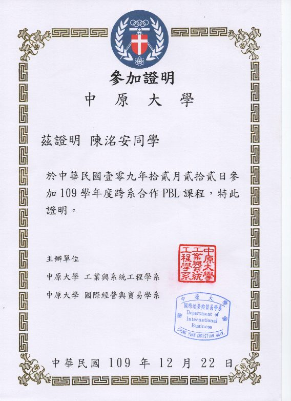
01 · 關於我
滑過去會閃，點一下翻到背面。
「工作不是生活的全部，但它是實現夢想的關鍵一環。」
02 · 玩具間
用滑鼠或手指抓起來丟。3D 物件都是用 Blender 做的。
03 · 一路走來
經濟學
跟工業系跨系合作：我們負責分析，他們負責做竹槍。

企業概論
創業實務：走訪友商、架網站，學會怎麼把東西賣出去。
看 Instagram ↗系統分析
城市儀表板大黑客松，做台北大數據中心的套件，整晚不睡打 code。
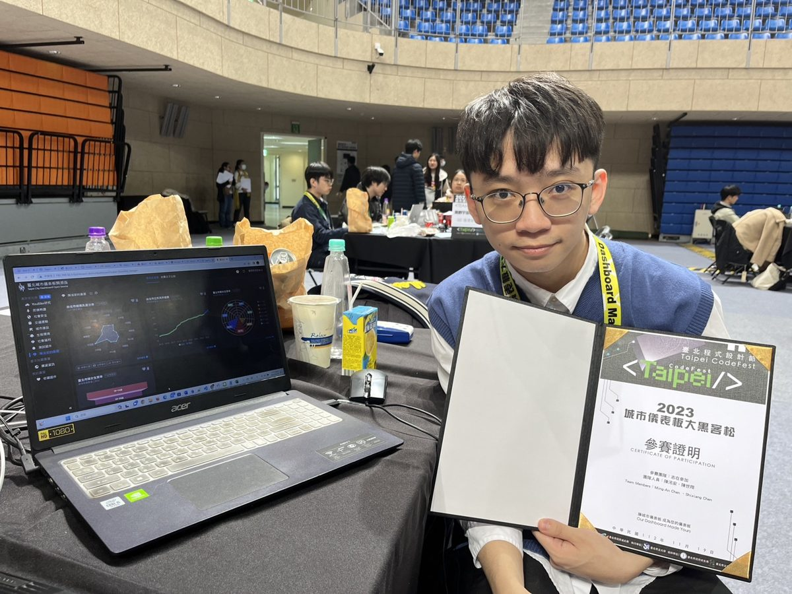
軟體專案管理、專題研究
桌球落點分析、虛擬數字人實現自我對話。
資工 × 資管雙主修，戴上方帽子的那天。
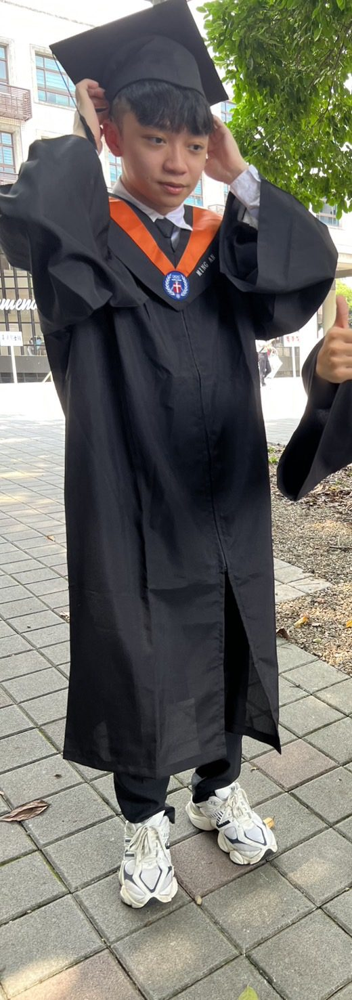
在觀光工廠跟大家介紹產品、在吧檯做咖啡。
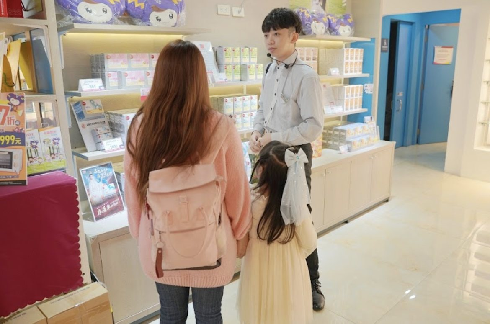
看更多 ↓04 · 現在在做什麼
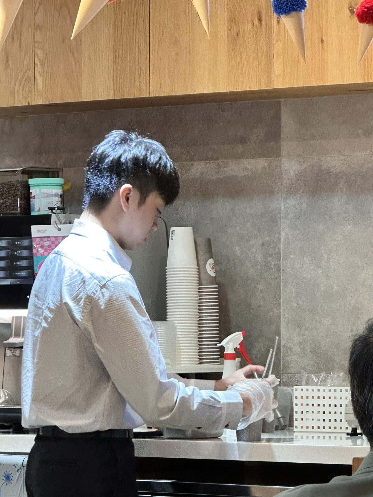
把複雜的東西講得簡單、讓人聽得開心。
寫程式教我拆解問題，導覽和門市教我怎麼跟人溝通。兩邊我都喜歡。
05 · 相簿
把最上面那張往旁邊甩出去，或用按鈕翻。
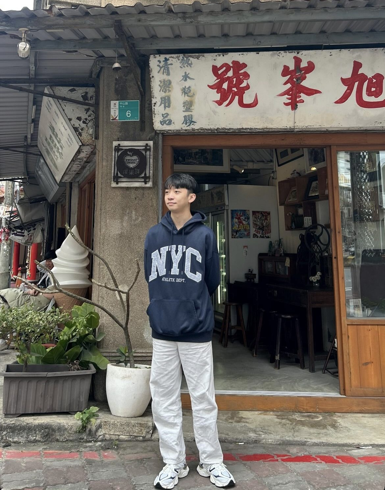
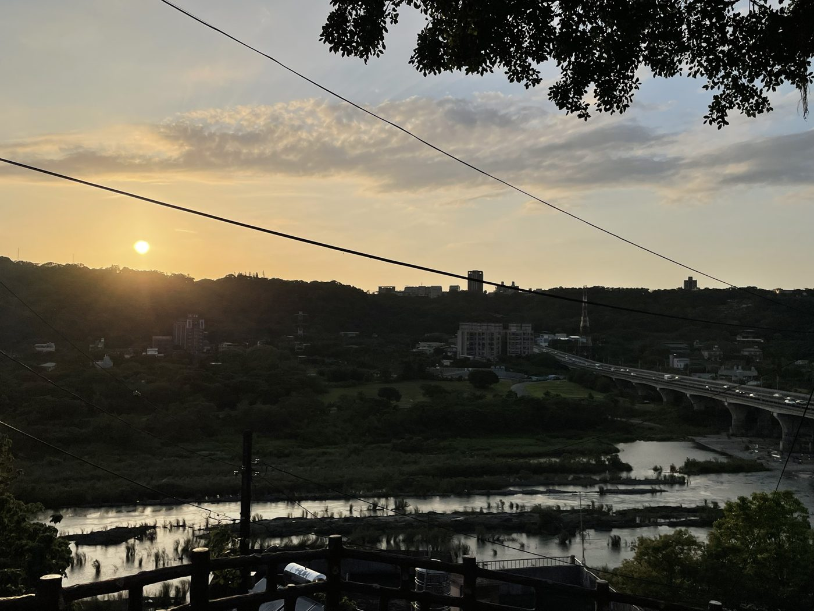
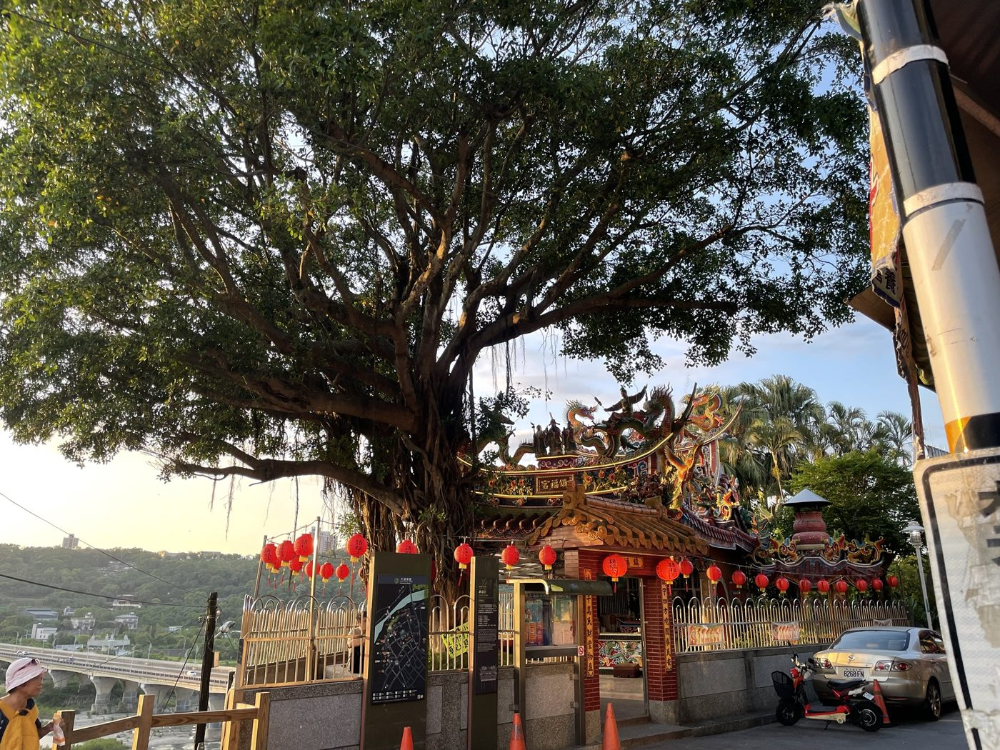
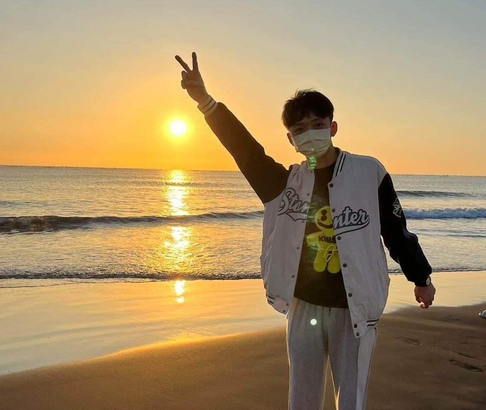
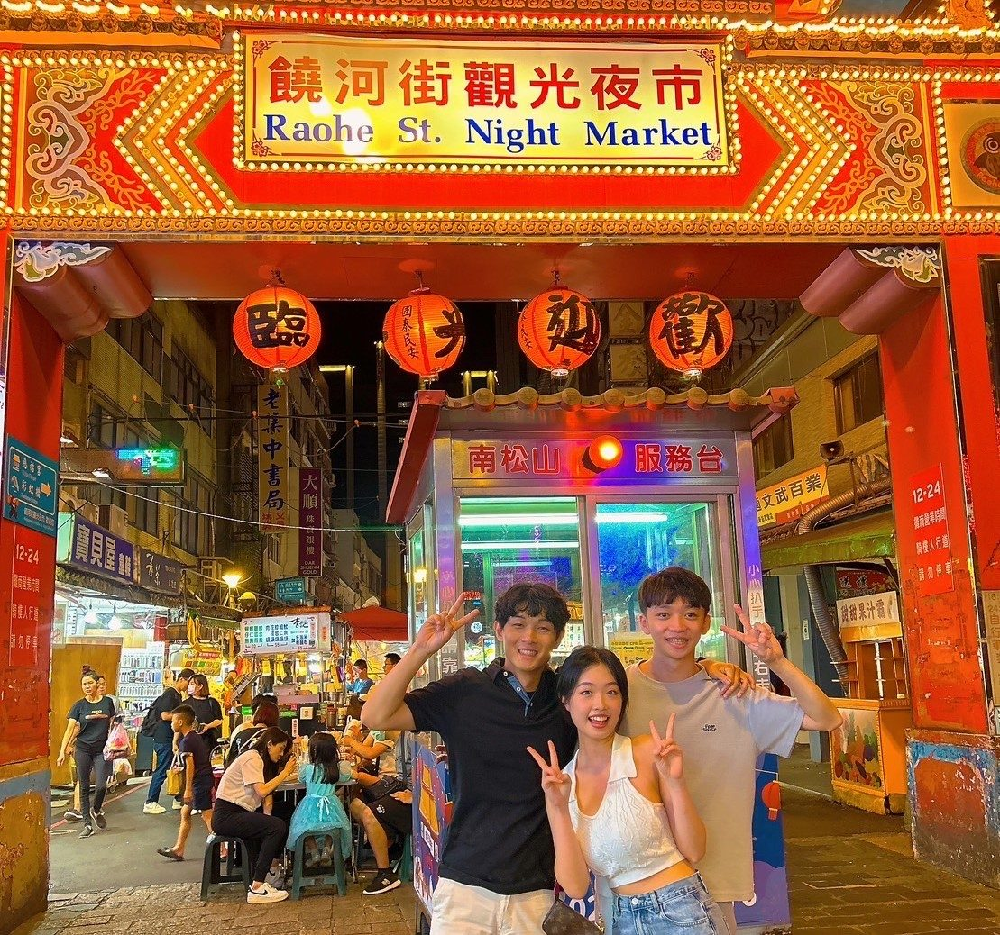
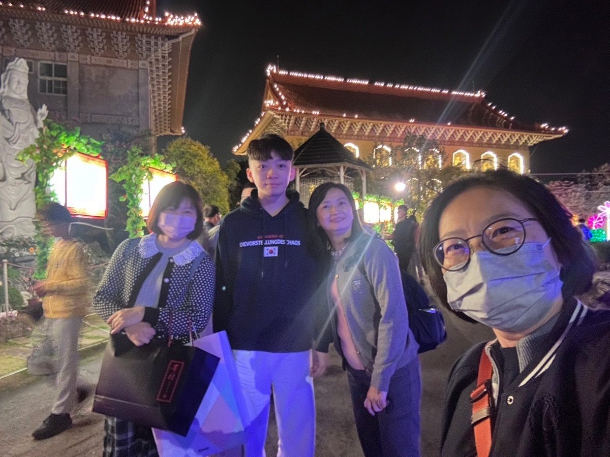
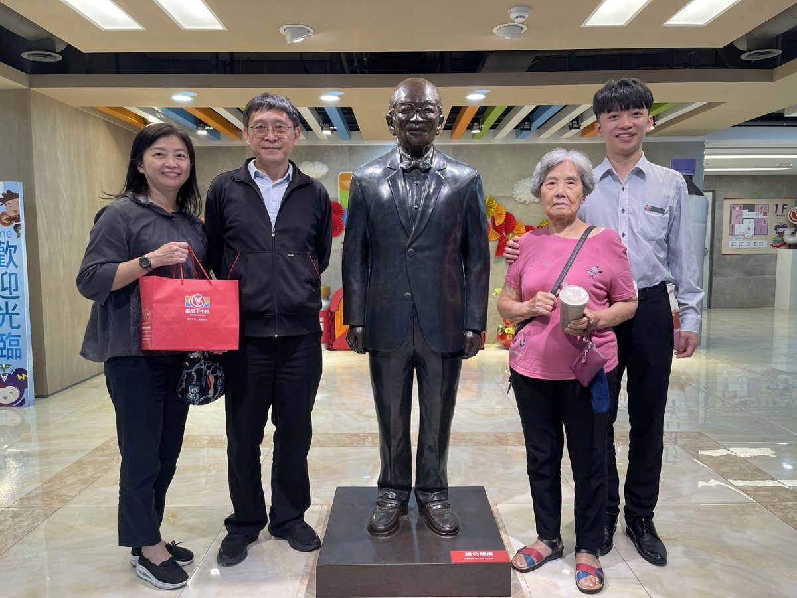
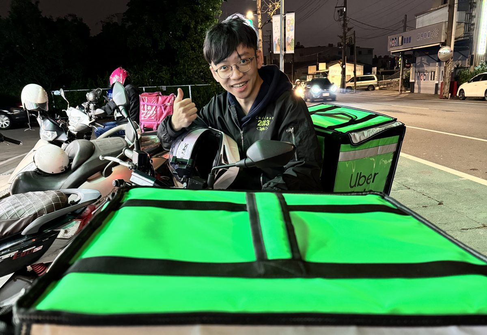
06 · 獎狀與證照
點一下翻面，背面有放大按鈕。
07 · 程式作品
3D 模型可以拖曳旋轉，程式碼可以直接捲動看。
C++ · 資料結構
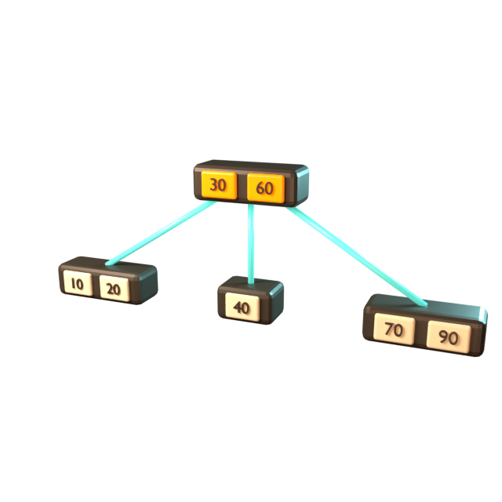
比起普通二元樹，樹高少很多，找資料更快。一開始用四個指標寫得又臭又長，改成 vector<nodetype*> 加遞迴之後就乾淨了。
學到：先把問題最小化。
載入程式碼中…C++ · 資料結構
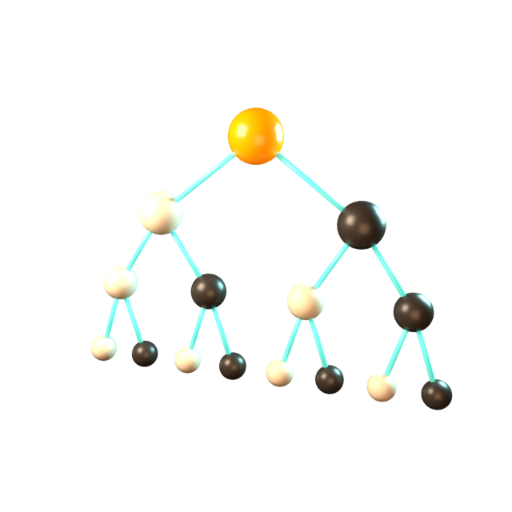
用 heap 做 priority queue，完全不用指標，一個陣列搞定，也比較不會 memory leak。
學到：選對資料結構，程式自然變簡單。
載入程式碼中…Hackathon · 前端 · 數據分析
台北程式設計節「城市儀表板大黑客松」。主程式不是我們寫的，但我學到怎麼開發組件，也第一次感受到前端有多好玩。
看成果影片 ↗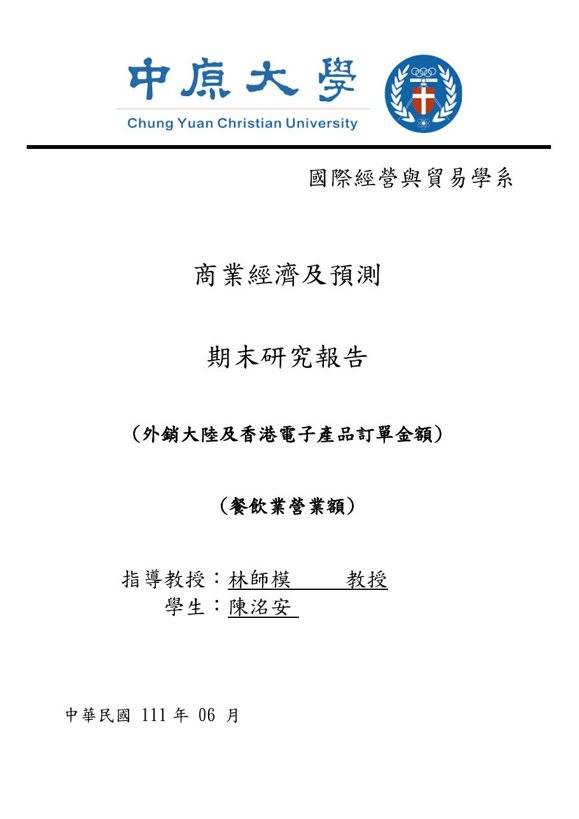
08 · 打招呼
工作機會、合作，或只是想說嗨，都歡迎。